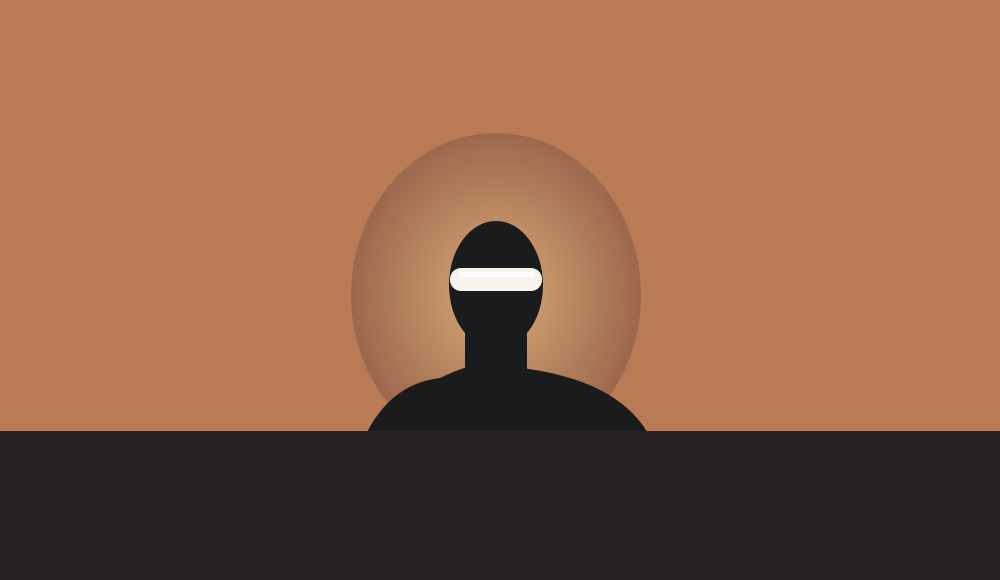
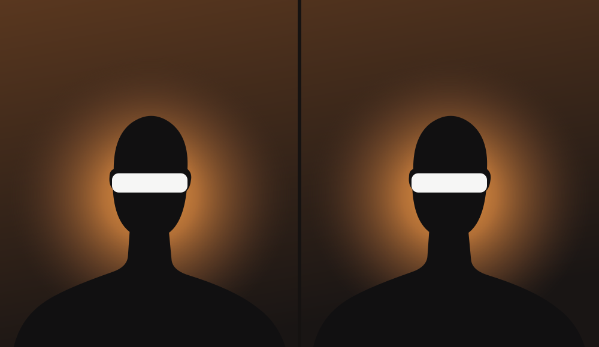
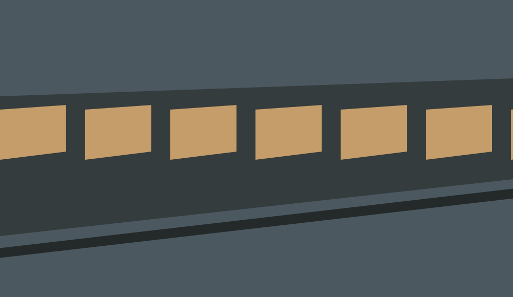
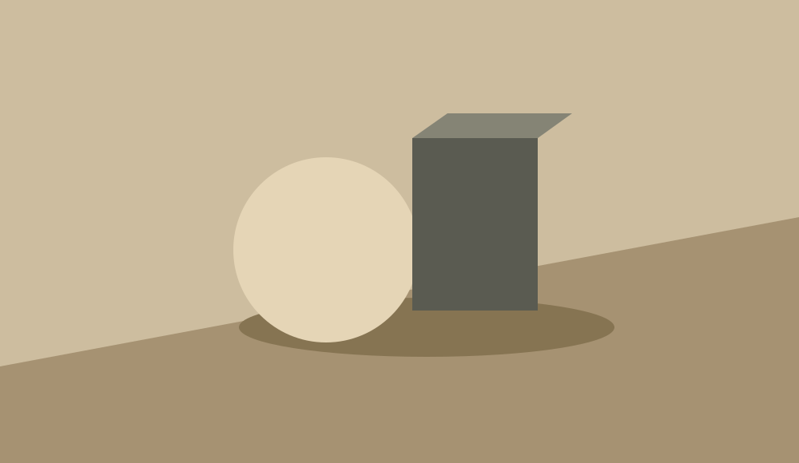

عکاسی
میان دو نور
مطالعهی پرتره با نور مایل و زمینهی خاموش.

منتخبی از روایتهای کوتاه، پرتره و تصویر متحرک.

مطالعهی پرتره با نور مایل و زمینهی خاموش.

روایتی کوتاه دربارهی انتظار، حرکت و لحظهی رسیدن.

چیدمان اشیای روزمره با سایههای تند و قاب نزدیک.
ایده، تختهی تصاویر و زبان بصری کار را مشخص میکنیم.
نور، صدا و حرکت در خدمت روایت قرار میگیرند.
تصویر نهایی برای انتشار و چاپ آماده میشود.
پیش از روز ضبط، استودیو چند مسیر نوری را برای چهره و صحنه امتحان میکند.
یک منبع از کنار صورت، خط بینی و انحنای گونه را مشخص میکند.
منبع پشت سوژه یک حاشیهی باریک روشن میسازد و چهره از زمینه جدا میشود.
سطح بزرگ نور نزدیک سوژه، سایههای ملایم و بافتی طبیعیتر میدهد.
کاربرد تصویر، تعداد قابها یا زمان فیلم، محل ضبط و تاریخ تحویل.
فرم پایین صفحه را تکمیل کن. یک فایل متنی از انتخاب و توضیحاتت دریافت میکنی.
این قالب نمایشی است. با تکمیل فرم، خلاصهی درخواستت را به صورت فایل متنی دریافت میکنی.
 انتخاب این قالب
انتخاب این قالب